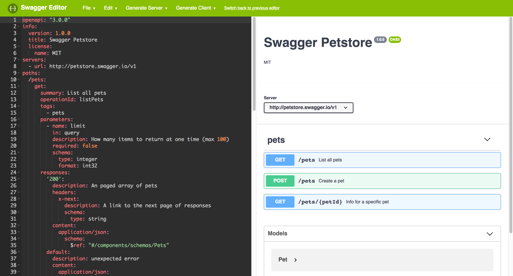

OpenAPI (formerly known as Swagger)
Outline (OpenAPI (formerly known as Swagger))
- OpenAPI (formerly known as Swagger) [14]
- GraphQL [0]
- AsyncAPI [0]
- SOAP [0]
(4) OpenAPI Basics

- Swagger started as an easy way to generate code from an API description
- Server code is generated by generating stubs for all specified URI paths
- Client code generates SDKs for clients by wrapping API interactions
- Swagger was renamed to OpenAPI at the beginning of 2016
- Swagger still exists [https://smartbear.com/] offered by [https://swaggerhub.com/]
- [https://github.com/OAI/OpenAPI-Specification/blob/master/versions/3.0.0.md] is the first standalone OpenAPI version and was [https://www.openapis.org/blog/2017/07/26/the-oai-announces-the-openapi-specification-3-0-0]
- OpenAPI is focused on Resource Style [Styles; Resource Style (1)] APIs by modeling APIs as sets of URI paths
- Paths can be templated and have operations and optionally parameters
- JSON support is built into OpenAPI for request/response schemas
- XML support is present but rather weak in terms of XML sophistication
(5) JSON and YAML
- JSON is the de-facto standard for structured data on the Web
- JSON is human-readable but visibly comes from a code background
- [http://yaml.org/] evolved as a human-readable format for configuration data
- JSON data can be written in YAML for a more human-friendly syntax
- YAML has many additional features that JSON does not support
- OpenAPI is defined in JSON and allows JSON and YAML representations
(8) Minimal OpenAPI Example
- Identification of the Swagger/OpenAPI version
- Minimal metadata about the described API
- URIs that are made available by the API
- Operations that can be performed on these URIs
- Responses to expect from these operations
(9) Minimal Swagger Example (JSON)
{
"swagger": "2.0",
"info": {
"title": "Weather API",
"version": "1.0.0" },
"host": "dret.net",
"basePath": "/weather",
"schemes": [ "http" ],
"paths": {
"/forecast": {"get": {
"summary": "Get the weather forecast.",
"responses": {
"200": { "description": "Successful operation." },
"400": { "description": "Invalid request." },
"500": { "description": "Server error." }}}}}}
(10) Minimal Swagger Example (YAML)
swagger: '2.0'
info:
title: Weather API
version: 1.0.0
host: dret.net
basePath: /weather
schemes:
- http
paths:
/forecast:
get:
summary: Get the weather forecast.
responses:
'200':
description: Successful operation.
'400':
description: Invalid request.
'500':
description: Server error.
(11) Minimal OpenAPI Example (JSON)
{
"openapi": "3.0.0",
"info": {
"title": "Weather API",
"version": "1.0.0" },
"servers": [
{
"url": "http://dret.net/weather" }],
"paths": {
"/forecast": {
"get": {
"summary": "Get the weather forecast.",
"responses": {
"200": { "description": "Successful operation." },
"400": { "description": "Invalid request." },
"500": { "description": "Server error." }}}}}}
(12) Minimal OpenAPI Example (YAML)
openapi: 3.0.0
info:
title: Weather API
version: 1.0.0
servers:
- url: 'http://dret.net/weather'
paths:
/forecast:
get:
summary: Get the weather forecast.
responses:
'200':
description: Successful operation.
'400':
description: Invalid request.
'500':
description: Server error.
(13) Paths with Query Parameters
- URIs with Query Parameters:
/pets?limit=42
/pets:
get:
summary: List all pets
operationId: listPets
tags:
- pets
parameters:
- name: limit
in: query
required: false
description: How many items to return at one time (max 100)
schema:
type: integer
format: int32
(14) Paths with Path Parameters
- URIs with Path Parameters:
/pets/somepetname
/pets/{petId}:
get:
summary: Info for a specific pet
operationId: showPetById
tags:
- pets
parameters:
- name: petId
in: path
required: true
description: The id of the pet to retrieve
schema:
type: string
(15) OpenAPI/Swagger Editor

(16) OpenAPI: The Complete Picture

(17) Describing Resource Style APIs
- OpenAPI describes APIs by listing all resource paths
- OpenAPI is often used to generate server/client code
- OpenAPI creates a static and tightly coupled API landscape
- Evolving OpenAPI APIs is not a core part of OpenAPI's mission